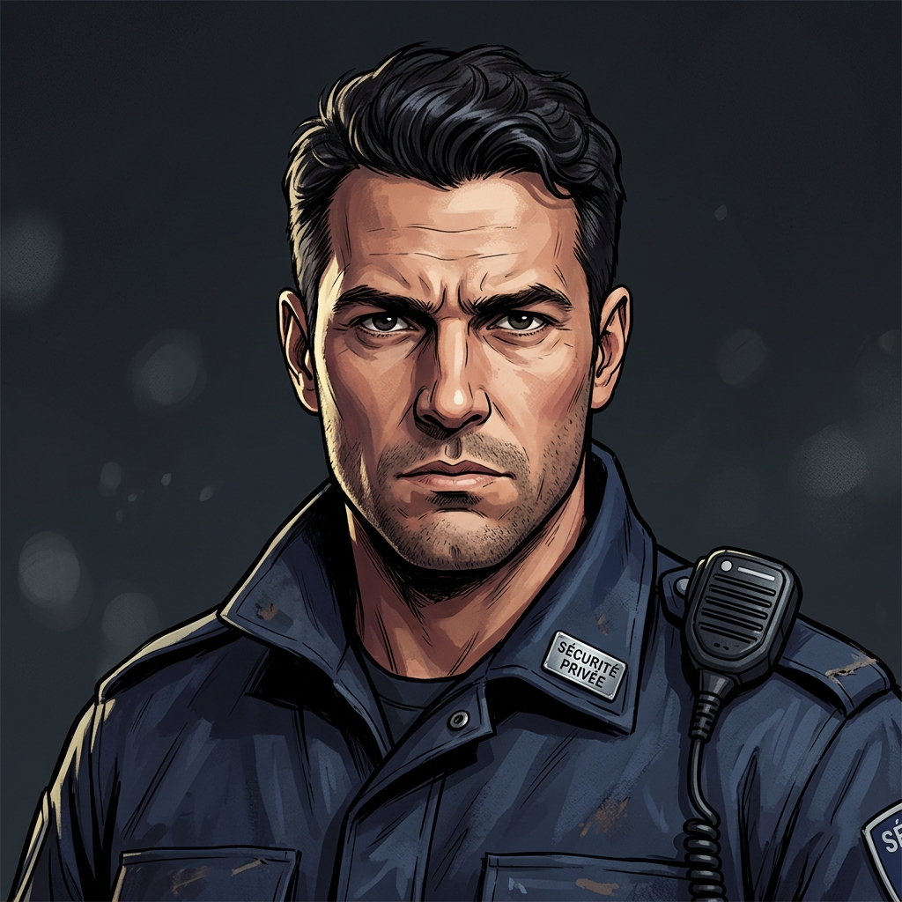
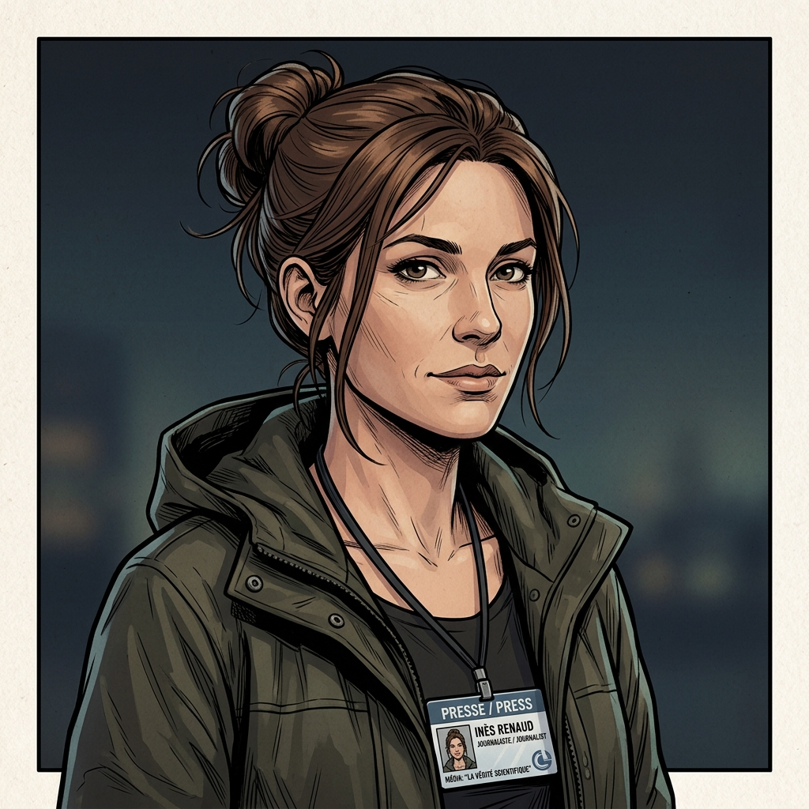
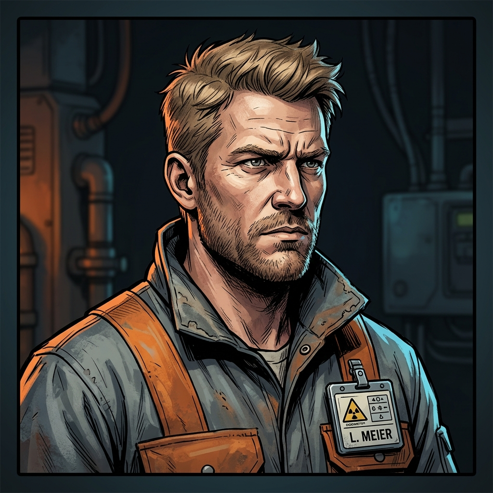
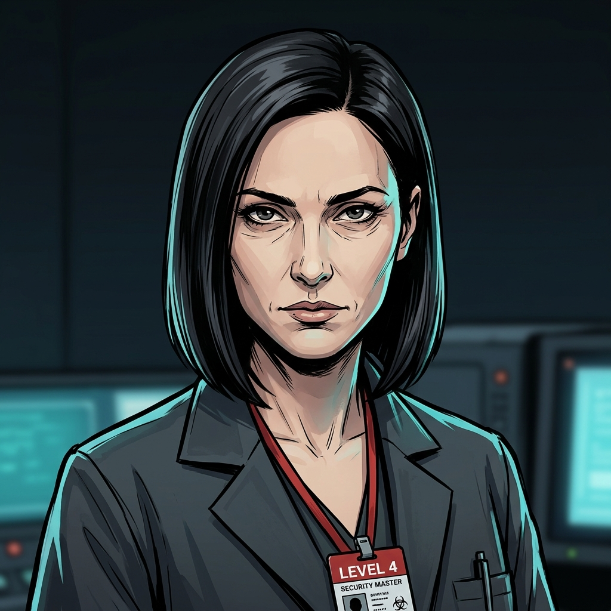
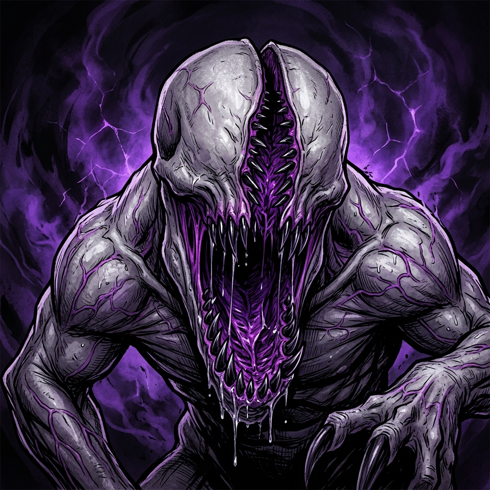
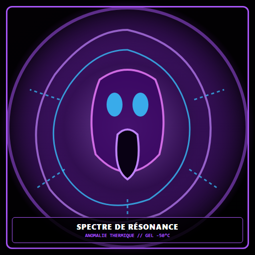
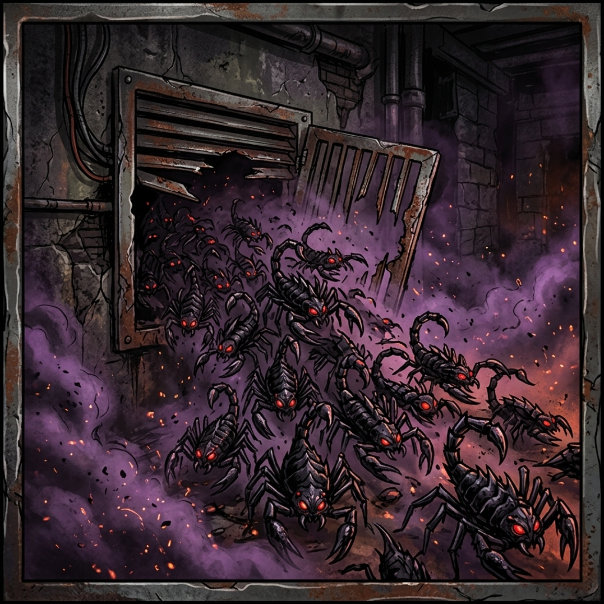
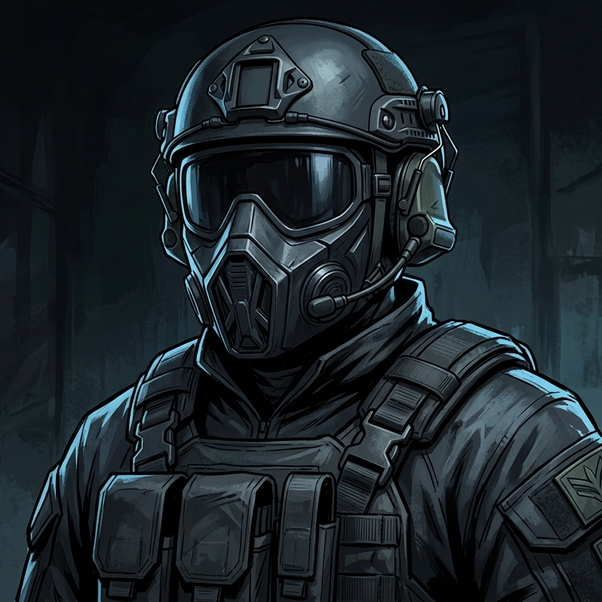

📋 Résumé Fonctionnel du Scénario
Acte I : Le Matin Ordinaire (09h00 - 10h00)
Vignettes individuelles (10-15 min par PJ). Routine, tensions sociales réalistes, matériel collecté et indices semés.
Acte II : Le Basculement & Le Confinement (10h00 - 10h08)
Tir de collision, flash violet et ouverture de la brèche. L'alarme laisse huit minutes aux survivants pour rejoindre le refuge R12.
Acte III : L'Arrêt du Faisceau & La Traque (10h08 - 11h15)
Zimmerman expose la situation à R12. Les survivants doivent déclencher l'arrêt d'urgence du faisceau, puis choisir une voie de sortie.
Acte IV : Le Protocole Ardoise Noire (11h15 - 12h00)
Arrivée des commandos. Fausse joie : ils tirent à vue. Fuite désespérée vers l'extérieur pour survivre.
- Échelle de Dégâts : Indemne ➔ Égratigné (-0) ➔ Blessé (-1 à tous les jets) ➔ Mourant (agonie) ➔ Mort.
- Échelle de Folie : Calme ➔ Stressé ➔ Paniqué (-1 Esprit) ➔ Fou furieux / Prostré.
- Avantages : Permettent de relancer 1d6 ou d'ajouter +1 à une caractéristique dans leur domaine.
- Ambiance : Pas de dialogue caricatural. Pas de punchlines. Le silence et les bruits métalliques sont vos meilleurs alliés.
🎙️ Introduction Globale à Lire aux Joueurs
Une brume tenace s'accroche aux contreforts du Jura et enveloppe les champs de la frontière franco-suisse. Mais ici, sur le site d'HÉLIX, l'atmosphère est électrique. HÉLIX, c'est le joyau mondial de la physique des particules : un anneau souterrain de vingt-sept kilomètres de circonférence, enfoui sous quatre-vingts mètres de roche calcaire.
Ce matin, à 10 heures précises, les deux premiers faisceaux de protons vont être injectés et accélérés à une vitesse proche de celle de la lumière, avec une énergie cumulée jamais atteinte de sept téraélectronvolts. Les télévisions du monde entier sont là. Les ministères ont envoyé leurs émissaires. Sur le parking extérieur, des dizaines de manifestants agitent des banderoles contre la création d'hypothétiques "micro-trous noirs capables d'avaler la planète".
Dans les couloirs carrelés et aseptisés, les gobelets de café tiède s'accumulent. Les écrans crépitent de courbes sinusoïdales. Chacun de vous est à son poste, absorbé par sa routine, ses ambitions ou ses tracas du matin. Personne n'imagine que dans moins d'une heure, les lois de la matière vont se déchirer. »
Expliquez aux joueurs que vous allez jouer cinq courtes scènes individuelles de 10 à 15 minutes, dans l'ordre chronologique de leur matinée. Les autres joueurs écoutent et profitent de la mise en place :
- Nicolas Favre (Sécurité) à la grille d'entrée à 09h15.
- Dr Samira Bensaïd (Médecin) à l'infirmerie à 09h20.
- Inès Renaud (Journaliste) dans l'atrium presse à 09h25.
- Lukas Meier (Ingénieur Cryo) à la sous-station technique à 09h30.
- Dr Anna Kowalska (Physicienne) dans la salle de contrôle centrale à 09h35.
👥 Les 5 Personnages & Leurs Vignettes

Lieu : Grille d'entrée principale du complexe HÉLIX.
Situation : Nicolas arrive en voiture de service. 80 manifestants bloquent la grille. Un car scolaire de collégiens est coincé au milieu. Son collègue Serge veut sortir le gaz lacrymo. La porte-parole Claire Vaneck se plaque contre sa vitre avec un tract.
Objectif : Faire entrer le car scolaire et son véhicule sans provoquer d'émeute avant 09h45.
Décisions & Impacts :
- Négocier avec Claire : Évite la violence, le car entre calmement. Claire sera reconnaissante plus tard si elle est croisée en fuite.
- Laisser Serge agir en force : Bouteilles jetées, pagaille. La grille est fermée dans la précipitation mais le contact avec les manifestants est rompu.
- Où garer le car scolaire ? Parking intérieur (enfants proches des bâtiments lors du drame) vs extérieur (enfants bloqués avec manifestants).
Information Clé révélée : Serge peste que le système coupe-feu est en mode « Confinement Bio » : si le courant coupe, tous les sas magnétiques et portes coupe-feu se soudent automatiquement et nécessitent des clés manuelles.

Lieu : Centre des Visiteurs et Atrium Presse (Surface).
Situation : Inès et son cadreur Gilles préparent leur duplex pour 09h55. Arnaud Delaroche (directeur com') tente de lui imposer un discours édulcoré. À l'écart, le vieux Professeur Hoffman, théoricien mis au placard, l'aborde d'un air fiévreux.
Objectif : Boucler son duplex et décider qui interviewer pour son ouverture d'antenne.
Décisions & Impacts :
- Interviewer Delaroche : Évite les ennuis, reçoit un badge "Accès Libre Galerie Visiteur".
- Enregistrer l'avertissement d'Hoffman : Obtient l'enregistrement audio exclusif qui prouve l'alerte précoce (or pour la suite), mais Delaroche lui refuse l'accès aux étages VIP.
Information Clé révélée : L'arrêt d'urgence du faisceau, appelé « Beam Dump » par les techniciens, dévie les protons vers 200 tonnes de graphite. Il peut être déclenché depuis la salle de contrôle ou la sous-station cryogénique.
Lieu : Service médical du bâtiment B (Surface).
Situation : Marc, un technicien de maintenance, a une brûlure superficielle d'hélium au bras mais ment pour retourner au travail sur les tunnels. Élodie, jeune secrétaire, fait une crise de panique sévère dans la salle d'attente.
Objectif : Traiter ses deux patients, signer ou refuser l'aptitude de Marc et faire son sac d'intervention avant 09h50.
Décisions & Impacts :
- Garder Marc en observation à l'infirmerie : Marc reste à l'infirmerie. C'est un gaillard robuste qui sera un allié précieux quand les monstres attaqueront la surface.
- L'autoriser à descendre : Marc descend au niveau -20m (il sera séparé d'elle et grièvement touché lors du crash).
- Prescription pour Élodie : Anxiolytique léger (reste lucide) vs Sédatif fort (s'endort profondément, fardeau à porter lors de l'évacuation).
Information Clé révélée : Marc lui confie qu'il y a trois combinaisons étanches pressurisées dans les casiers du couloir cryo B-4, capables de résister aux gaz toxiques et au froid extrême (-200°C).

Lieu : Sous-station cryogénique B-4 (Niveau -20m).
Situation : Au milieu des compresseurs assourdissants maintenant l'hélium à 1,9 Kelvin. La vanne V-12 a une micro-fuite de pression. Son chef Bossis lui hurle de forcer le feu vert informatique sans purger pour ne pas décaler le tir télévisé de 10h.
Objectif : Décider s'il shunte la sécurité ou impose une purge manuelle, et donner le statut Cryo-OK.
Décisions & Impacts :
- Shunter la sécurité (Bypass) : Feu vert envoyé à temps. Bossis est ravi. Les conduites d'hélium restent sous surpression (exploseront lors de l'accident en inondant le secteur B-4 de gaz mortel).
- Refuser et faire la purge : Bossis passe en force par-dessus son épaule, mais la ligne est partiellement dépressurisée (réduit les fuites toxiques).
Information Clé révélée : Bossis lui montre le téléphone rouge analogique mural sur ligne cuivre indépendante alimentée par batterie : il fonctionne même en cas de coupure générale et relie la cryo à la salle de contrôle.

Lieu : Salle de Contrôle Centrale - CCR (Bunker Niveau -80m).
Situation : À 20 minutes du tir. Écrans géants, effervescence. Son collègue Matteo Ricci relève une anomalie de résonance et propose de réduire l'intensité du faisceau de 10 %. Le Directeur Zimmerman refuse catégoriquement.
Objectif : Armer la séquence d'injection et sécuriser la seconde clé d'arrêt d'urgence.
Décisions & Impacts :
- Obtempérer à 100% : Zimmerman lui confie les pleins accès console ; Anna remarque la première clé opérateur fixée au pupitre rouge.
- Tenter un bridage secret ou insister : Zimmerman s'emporte et s'isole dans son bureau vitré. Anna peut en profiter pour repérer où il range la seconde clé physique de l'arrêt du faisceau (dans le tiroir supérieur de son bureau).
Information Clé révélée : L'arrêt d'urgence du faisceau nécessite deux clés physiques tournées simultanément. L'inertie des électroaimants impose ensuite de maintenir la commande pendant dix secondes.
⏳ Chronologie Scène par Scène
Chaque PJ vit sa vignette de 10-15 min. L'ambiance est lumineuse, technique et politique. Les manifestants crient dehors, les télévisions s'installent, les compresseurs ronronnent.
Au niveau −80 m, la caverne de détection est déchiquetée par une déchirure spatiale luminescente. Les automatismes de sécurité tombent en panne et des formes monstrueuses traversent. Le faisceau continue de circuler : la brèche restera ouverte tant que l'arrêt manuel ne sera pas déclenché.
Annonce automatique : « Anomalie majeure. Tout le personnel doit rejoindre immédiatement le refuge intermédiaire R12. Verrouillage définitif des sas dans huit minutes. »
Le monte-charge reste alimenté en mode évacuation jusqu'à la fin du décompte. R12, situé à −20 m, est à mi-chemin entre la surface et le bunker profond. À zéro, ses deux portes blindées se ferment : toute personne encore à la surface ou à −80 m est isolée.
PNJ à rassembler : Serge, Claire, Marc, Élodie et Zimmerman. Ils connaissent le protocole, mais la panique, les blessures et l'obstination de Zimmerman empêchent un regroupement automatique.
Les portes se ferment derrière les survivants. L'accès depuis la surface et le bunker est condamné, mais le pupitre intérieur permet au groupe de libérer une branche à la fois : la galerie vers la cryogénie ou le sas vers le niveau −80 m. Les grondements réguliers prouvent que l'accélérateur fonctionne encore.
Deux possibilités. La salle de contrôle R23 : la clé opérateur est fixée à la console rouge, la clé de direction est dans le tiroir supérieur de mon bureau vitré. Il faut les tourner ensemble. Ou la sous-station cryogénique B-4, R14 : un disjoncteur mécanique permet la même coupure. Dans les deux cas, maintenez la commande dix secondes. Après cela seulement, la brèche se refermera.
Ce plan au-dessus du pupitre indique aussi les issues. R01 ramène à la grille principale. R30 est une galerie d'exhaure qui ressort dans la forêt, deux kilomètres au sud. Mais choisissez vite : quelque chose remonte vers nous. »
- Ils doivent arrêter le faisceau pour empêcher de nouvelles créatures de franchir la brèche.
- Ils choisissent la route R23 (deux clés, deux personnes) ou la route R14 (disjoncteur mécanique).
- Ils maintiennent la commande choisie pendant dix secondes sous pression.
- La brèche se ferme, mais les créatures déjà présentes ne disparaissent pas.
- Ils gagnent ensuite R01 ou R30 pour quitter le complexe.
- Inès peut réécouter l'avertissement enregistré du professeur Hoffman.
- Anna a vu l'alerte « arrêt physique requis » sur la console de R23.
- Lukas connaît la consigne murale et le disjoncteur mécanique de B-4.
- Le pupitre de R12 affiche les deux itinéraires vers R23 et R14.
Les survivants choisissent entre R23 et R14 pour arrêter le faisceau, tandis que les créatures déjà passées rôdent dans le complexe. Fuir avant la coupure reste physiquement possible, mais la brèche continuera de vomir des créatures et le complexe risque de s'effondrer.
Après la coupure : un choc sourd traverse la montagne, les lumières vacillent et la déchirure se replie. Le silence qui suit confirme la réussite. Les survivants consultent alors le plan photoluminescent de R12 ou les panneaux d'évacuation répétés dans les galeries.
- Route de surface : remonter par R10 puis gagner le poste de garde R01 ; c'est la voie la plus courte, mais elle débouche sur le cordon militaire.
- Route souterraine : descendre à −80 m puis suivre la galerie de drainage R30, qui ressort deux kilomètres plus loin dans la forêt.
Pris en étau entre les créatures affamées et les escouades de nettoyage qui posent des charges thermiques, les survivants doivent utiliser les conduits d'aération, les tunnels de drainage ou forcer la grille nord pour s'enfuir dans la forêt du Jura.
🗺️ Plan Architectural Interactif HÉLIX


👤 Personnages Non-Joueurs (PNJ)
Rôle : Gardien en chef du portail avec Nicolas Favre. Ancien militaire suisse, soupe au lait, dépassé par les foules.
Comportement : Devient violent sous le stress, prêt à tirer ou à abandonner son poste pour sauver sa peau.
7741) et a caché un pistolet 9mm non déclaré dans le faux plafond du poste de garde.
Rôle : Porte-parole des militants anti-trou noir à l'extérieur. Idéaliste, courageuse mais terrifiée par ce qui sort des bouches d'aération.
Comportement : Tente de protéger les enfants du car scolaire lors de la catastrophe.
Rôle : Directeur scientifique d'HÉLIX. Ambitieux, hautain et aveuglé par la gloire de l'injection 7 TeV.
Comportement : En déni complet au début, refuse d'arrêter l'expérience, puis panique totale.
Rôle : Technicien de maintenance des lignes de vide. Gaillard robuste, loyal envers le Dr Bensaïd.
Comportement : Courageux mais diminué par sa brûlure cryo au bras gauche s'il n'a pas été soigné.
Rôle : Secrétaire de direction, en crise de panique sévère à l'infirmerie dès 09h00.
Comportement : Totalement vulnérable, pleure et supplie qu'on la sorte de là.
🔍 Indices & Logique du Complexe
-
1. Les deux clés de l'arrêt du faisceau
La clé opérateur reste fixée au pupitre rouge de R23 ; la clé de direction se trouve dans le tiroir supérieur du bureau vitré de Zimmerman. Les deux doivent être tournées simultanément. -
2. Le Téléphone Rouge Analogique Mural
Emplacement : Sous-station Cryo B-4 (-20m) et Régie CCR (-80m). Ligne cuivre indépendante alimentée par batterie : permet aux PJ séparés entre sous-sol et surface de se coordonner malgré la panne réseau. -
3. Les 3 Combinaisons Cryo Hazmat Étanches
Emplacement : Casiers du couloir B-4 (Niveau -20m). Permettent de traverser les zones inondées d'azote/hélium liquide à -200°C et d'ignorer le gaz asphyxiant. -
4. L'Enregistrement Audio d'Inès (Pr Hoffman)
Emplacement : enregistreur numérique d'Inès. Hoffman y nomme l'arrêt d'urgence du faisceau et ses deux postes de commande ; l'enregistrement prouve également que la direction avait été alertée. -
5. L'Ordre de Mission "Ardoise Noire"
Emplacement : Tablette tactique ou cadavre d'un commando abattu. Document officiel portant la mention : « Confinement total. Liquidation de tout personnel civil et scientifique présent sur zone. » -
6. Le Plan d'Évacuation de R12
Fixé au-dessus du pupitre du refuge. Il indique la sortie principale par R10/R01 et une seconde issue : « Exhaure Sud R30 — sortie de secours — forêt à 2 km ».
👾 Bestiaire, Menaces & Dangers Environnementaux

Apparence : Quadrupède écorché de 2m à la peau grisâtre translucide laissant voir des organes noirs palpitants. Crâne fendu par une immense mâchoire verticale d'obsidienne.
Comportement & Chasse : Chasse exclusivement au bruit, aux vibrations du sol et au souffle de panique. Grimpe aux parois et fond depuis les faux plafonds.
- Aveuglement : Très sensible aux flashs lumineux violents (projecteur vidéo récupérable dans la régie R05) : le force à battre en retraite 1 round.
- Diversion sonore : Jeter un objet métallique détourne son attention (jet d'Esprit).

Apparence : Brume violette semi-consciente ondulante, visage fantomatique hurlant dissous dans la vapeur glaciale.
Effets : Traverse les cloisons sous forme gazeuse. Provoque des hallucinations auditives. Tout contact direct gèle instantanément la chair.
- Extincteurs CO2 : Projeter un extincteur disperse l'entité pendant plusieurs minutes.
- Ventilation lourde : L'aspiration des ventilateurs l'expulse vers l'extérieur.

Apparence : Essaims d'arthropodes d'obsidienne de la taille d'une main, tombant par grappes des grilles de ventilation.
Comportement : Attaquent en groupe dans les conduits et faux plafonds. Immunité totale si port d'une combinaison Hazmat étanche.
Contre-mesure : Flammes / Briquet, sprays inflammables.

Profil : Unité d'élite d'intervention noire en combinaison étanche pressurisée, masque à gaz intégral avec optiques thermiques nocturnes.
Protocole Opérationnel : Avancent en binômes méthodiques, liquident civils et monstres sans distinction, posent des explosifs sur les serveurs.
⚠️ Dangers Environnementaux du Complexe
L'hélium liquide sous pression se détend instantanément en un gaz incolore et inodore qui gèle les poumons. Traverser une salle contaminée sans combinaison Hazmat entraîne la mort en 2 rounds d'asphyxie cryogénique.
Dans les sous-sols inondés près des transformateurs (R18), des arcs à haute tension crépitent aléatoirement. Tout déplacement rapide sans perche isolante impose un jet de Corps sous peine d'électrocution létale.
À 10h08, le confinement active le verrouillage magnétique. Les portes ordinaires peuvent être ouvertes avec le trousseau du poste R01 ou le badge maître de Zimmerman ; les doubles portes de R12 ne répondent plus qu'au pupitre situé à l'intérieur du refuge.
| 1d6 | Événement Soudain dans la Pièce / Couloir |
|---|---|
| 1 | Bruits de griffes au plafond : Une dalle de faux plafond s'effondre avec de la poussière. Un Rôdeur passe au-dessus sans les voir. |
| 2 | Chute brutale de température : Les vitres givrent instantanément. Le souffle des PJ devient visible. Un Spectre de Résonance traverse le mur voisin. |
| 3 | Cadavre d'un technicien : Découverte d'un corps déchiqueté. Dans sa poche : un badge d'accès de niveau supérieur ou un rouleau d'adhésif renforcé. |
| 4 | Rupture de canalisation : Un jet de vapeur d'eau bouillante ou de liquide cryo jaillit d'un raccord, bloquant le couloir. |
| 5 | Appel radio glaçant : Le talkie-walkie de Nicolas capte la fréquence militaire : « Bâtiment A sécurisé. 12 corps civils neutralisés. En route vers les tunnels cryo. » |
| 6 | Attaque surprise immédiate : Un Rôdeur de Faille jaillit d'une porte latérale ou de l'obscurité ! |
📄 Aides de Jeu Diégétiques (Handouts Joueurs)
Mardi 23 septembre 2008 — 10h00 : L'accélérateur HÉLIX va injecter des faisceaux de protons à une énergie folle de 7 Téraélectronvolts sous nos pieds !
Plusieurs physiciens de renommée internationale ont alerté sur le risque réel de création de micro-trous noirs stables et de déchirement du vide quantique ! Les autorités du CERN et d'HÉLIX refusent le débat public et imposent le secret !
— Professeur Paul Hoffman (Ancien directeur de recherche HÉLIX, mis au placard en mai 2008)
RASSEMBLEMENT PACIFIQUE CE MATIN DÈS 08H30 DEVANT LA GRILLE DU SECTEUR JURA !
Contact presse / porte-parole : Claire Vaneck — Tél : 079 412 88 19
DATE : 23/09/2008 — 10H14
OBJET : DÉCLENCHEMENT IMMÉDIAT DU PROTOCOLE « ARDOISE NOIRE » (BLACK SLATE)
1. SITUATION : Rupture dimensionnelle critique confirmée sur le site HÉLIX (Secteur Jura). Contamination biologique exogène de niveau 4.
2. MISSION :
- Bouclage hermétique du périmètre à 2 km. Tir d'arrêt sans sommation.
- Neutralisation de toutes les entités biologiques non répertoriées.
- Extraction ou destruction intégrale des disques de données (Bunker -80m, Salle R24). Pose de charges thermiques C4-TH3.
- CONSIGNE ZÉRO TÉMOIN : Élimination systématique de l'ensemble du personnel civil et scientifique présent sur site pour prévenir tout scandale d'État.
3. COUVERTURE : Communiqué officiel préétabli : « Explosion accidentelle d'une cuve d'hélium liquide sous haute pression ayant entraîné l'asphyxie des installations souterraines. »
EN CAS D'EMBALLEMENT THERMIQUE OU D'ANOMALIE GRAVITATIONNELLE :
- Insérer les deux clés physiques (clé opérateur fixée au pupitre + clé de direction rangée dans le bureau de Zimmerman) dans la console rouge de la CCR, ou basculer le disjoncteur de secours Cryo B-4.
- Tourner simultanément d'un quart de tour vers la droite.
- Maintenir le bouton poussoir enfoncé pendant 10 secondes jusqu'au verrouillage des électroaimants de déflexion vers les blocs de graphite.
⚠️ ÉVACUATION IMMÉDIATE DU PUITS R29 REQUISE (DISSIPATION DE 350 MJ) ⚠️
🔒 Secrets Réservés au Meneur de Jeu
- Le Rythme : Ne laissez pas les joueurs débattre 10 minutes dans un couloir. Si le rythme ralentit, faites claquer un tuyau sous pression ou faites résonner des pas lourds sur les grilles au-dessus d'eux.
- La Mort : Dans Sombre, la mort d'un PJ doit être mémorable et viscérale. Si un joueur meurt, confiez-lui immédiatement le rôle d'un PNJ survivant (Marc, Serge, Claire) pour qu'il continue à jouer.
- L'Empathie : Utilisez les PNJ faibles (Élodie, les enfants du car) pour forcer les PJ à des choix moraux déchirants : fuir plus vite ou ralentir pour sauver des vies.
🏁 Les Différentes Fins Possibles
Conditions : Inès (ou un autre PJ avec son enregistreur et les disques d'Anna) parvient à s'enfuir par la forêt du Jura et à joindre une rédaction extérieure.
Épilogue : Les enregistrements audio et données du tir fuitent sur Internet. Le scandale mondial est sans précédent. Les survivants sont traqués toute leur vie par les services secrets mais la vérité est connue.
Conditions : Des PJ s'enfuient sans preuves formelles.
Épilogue : HÉLIX est rasé sous couvert d'une décontamination chimique. La presse titre sur « la tragédie de l'hélium à Genève : 84 morts ». Les PJ sont déclarés morts dans l'accident et doivent vivre sous de fausses identités.
Conditions : Tous les PJ sont tués par les créatures ou les commandos.
Épilogue : Le capitaine Vane confirme la purge complète. Les charges thermiques vitrifient le sous-sol. Le secret de la faille est scellé sous 10 000 tonnes de béton armé.
Conditions : Lukas ou Anna reste en arrière pour surcharger les compresseurs cryo et faire sauter le complexe pour emporter les commandos et les créatures pendant que les autres fuient.
Épilogue : Un sacrifice digne des plus grands récits de survival horror.